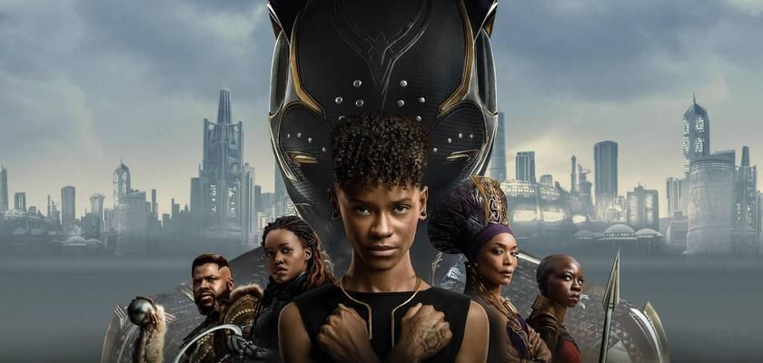
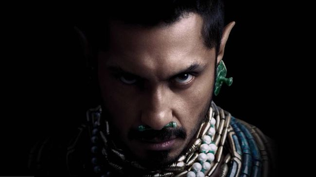
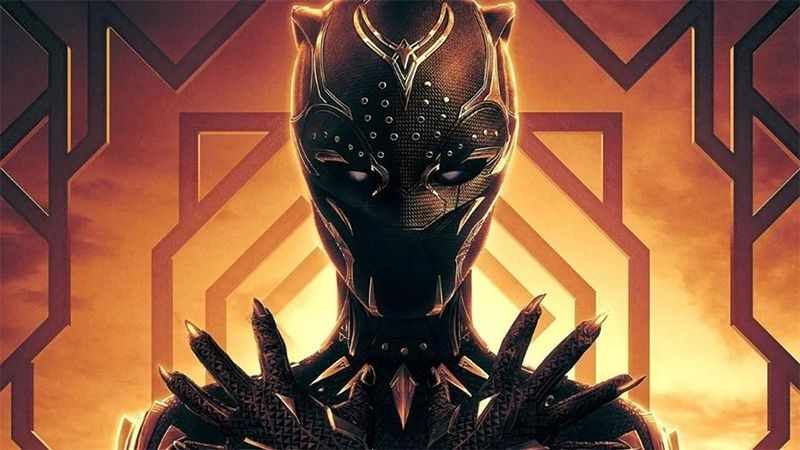

Sinopsis Black Panther 2, Babak Baru Wakanda Usai Kepergian T'Challa
Dikutip dari CNN Indonesia. Dan di tulis oleh Daffaa A. Pada 9 November 2022.
Black Panther: Wakanda Forever merupakan saga kedua Black Panther sekaligus film penutup fase keempat Marvel Cinematic Universe (MCU).
Berikut sinopsis Black Panther 2 yang melanjutkan kisah bangsa Wakanda sepeninggal Raja T'Challa (Chadwick Boseman).

Tahun setelah T'Challa wafat, dunia luar mulai mencoba merebut vibranium dari Wakanda. Mereka menilai bangsa itu menjadi lemah karena Black Panther telah tiada. Namun, ibu suri Ramonda (Angela Bassett) menyatakan Wakanda akan tetap kuat dan tidak gentar dengan siapa pun yang ingin mengambil vibranium dari bangsanya.
Di sisi lain, pemerintah Amerika juga tengah melakukan operasi rahasia untuk mencari vibranium. Dengan alat detektor canggih, mereka berhasil menemukan sumber energi tersebut di bawah laut. Pasukan penyelam elite tak lama kemudian diterjunkan untuk mencari vibranium di area tersebut. Tanpa disangka, pasukan itu justru diserang oleh makhluk misterius yang hidup di bawah laut.
Mereka adalah bangsa Talokan, peradaban manusia bawah laut yang selama ini mengisolasi diri dari peradaban di daratan. Bangsa itu dipimpin oleh Namor (Tenoch Huerta), seorang mutan berkekuatan super yang telah berkuasa selama ribuan tahun. Bangsa Talokan hidup di bawah laut dengan mengandalkan vibranium sebagai sumber energi. Penemuan vibranium di Talokan tak pelak mengubah catatan sejarah yang selama ini menyebut bahwa vibranium hanya berada di Wakanda. Tak lama dari peristiwa itu, Namor tiba-tiba muncul di hadapan Ramonda dan Shuri (Letitia Wright) yang tengah memperingati satu tahun kematian T'Challa.

Namor protes karena Talokan yang selama ini terisolasi menjadi terusik setelah Wakanda 'pamer' kekuatan vibranium ke dunia luar. Ia menuntut pertanggungjawaban Wakanda atas keputusan yang berdampak ke bangsanya. Namor memberi ultimatum agar Wakanda dapat menangkap ilmuwan yang membuat alat detektor vibranium. Ilmuwan itu harus ditangkap tanpa sepengetahuan dunia luar lalu diserahkan ke Talokan untuk dibunuh. Jika menolak, Namor beserta tentara Talokan akan muncul ke daratan dan menghabisi seisi dunia.
Namun, permintaan Namor itu menimbulkan masalah baru bagi Wakanda karena ilmuwan yang mereka cari ternyata masih remaja. Ia bernama Riri Williams (Dominique Thorne), mahasiswi MIT yang tak sengaja menciptakan teknologi itu ketika membuat tugas kuliah.
Konflik tersebut pun semakin meluas menjadi persoalan politik yang melibatkan Wakanda, Talokan, dan dunia luar. Di sisi lain, Shuri dan keluarga kerajaan masih berkutat dengan rasa duka atas kematian T'Challa.

Black Panther: Wakanda Forever merupakan film kedua Black Panther yang melanjutkan kisah bangsa Wakanda setelah T'Challa wafat. Film ini masih ditulis dan disutradarai Ryan Coogler.
Sekuel ini dibintangi oleh Letitia Wright, Lupita Nyong'o, Danai Gurira, Winston Duke, dan Angela Bassett. Film ini juga bakal menjadi debut Dominique Thorne sebagai Riri Williams alias Ironheart, superhero muda yang bakal menjadi anggota Young Avengers.
Selain itu, Black Panther 2 juga menjadi debut Tenoch Huerta sebagai Namor di MCU. Namor merupakan penguasa bangsa Talokan, bangsa yang dikenal sebagai surga di bawah laut.
Black Panther: Wakanda Forever tayang 9 November di bioskop Indonesia